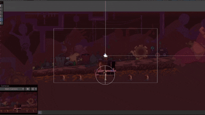

Experimente explorar um mundo completamente robótico pós apocalíptico onde todos os seres vivos são máquinas
Um Metroidvania, Plataforma 2.5D de exploração e aventura. Escolha as peças do corpo que mais te agradam e encare inimigos com seu próprio estilo de combate. Desvende enigmas e encontre aliados enquanto procura pela origem de seu despertar.
nossas redes:
Github Itch.io